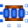

CuboidFlux tube with rectangular cross-section; fixed shape; linear or non-linear material characteristics |
Information
This information is part of the Modelica Standard Library maintained by the Modelica Association.
Please refer to the enclosing sub-package FixedShape for a description of all elements of this package and to [Ro41] for derivation and/or coefficients of the equation for permeance G_m.
Parameters (6)
| nonLinearPermeability |
Value: true Type: Boolean Description: = true, if non-linear rel. permeability is used, otherwise constant rel. permeability |
|---|---|
| mu_rConst |
Value: 1 Type: RelativePermeability Description: Constant relative permeability; used if nonLinearPermeability = false |
| material |
Value: Material.SoftMagnetic.BaseData() Type: BaseData Description: Ferromagnetic material characteristics; used if nonLinearPermeability = true |
| l |
Value: 0.01 Type: Length (m) Description: Length in direction of flux |
| a |
Value: 0.01 Type: Length (m) Description: Width of rectangular cross-section |
| b |
Value: 0.01 Type: Length (m) Description: Height of rectangular cross-section |
Connectors (2)
| port_p |
Type: PositiveMagneticPort Description: Positive magnetic port |
|
|---|---|---|
| port_n |
Type: NegativeMagneticPort Description: Negative magnetic port |
Components (1)
| material |
Type: BaseData Description: Ferromagnetic material characteristics; used if nonLinearPermeability = true |
|---|
Used in Examples (1)
|
Modelica.Magnetic.FluxTubes.Examples Inductor with saturation in the ferromagnetic core |
Used in Components (1)
|  |
Transformer3PhaseYyWithHysteresis Modelica.Magnetic.FluxTubes.Examples.Hysteresis.Components Three phase transformer in Yy configuration |